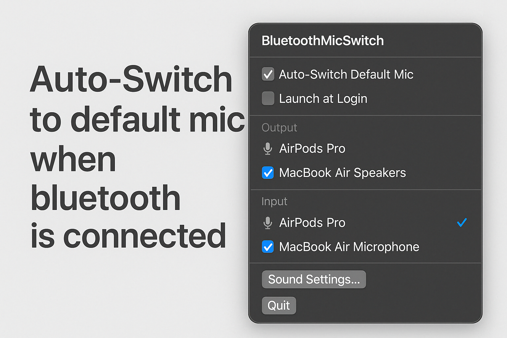

Simple. Automatic. Reliable.
Tired of terrible bluetooth audio on your Mac? This app automatically detects when your Bluetooth headphones connect and instantly switches the audio input to your Mac's built-in microphone. This bypasses bluetooth's low bandwidth issues allowing you to enjoy clear audio without manual adjustments!
 Buy me a coffee
Buy me a coffee
Key Features:
- Auto-detects Bluetooth device connections
- Instantly switches input to internal mic
- Set-and-forget background operation
- No complex setup needed
- Supports AirPods, Beats, Sony, Bose, and more
- Launch at login option
